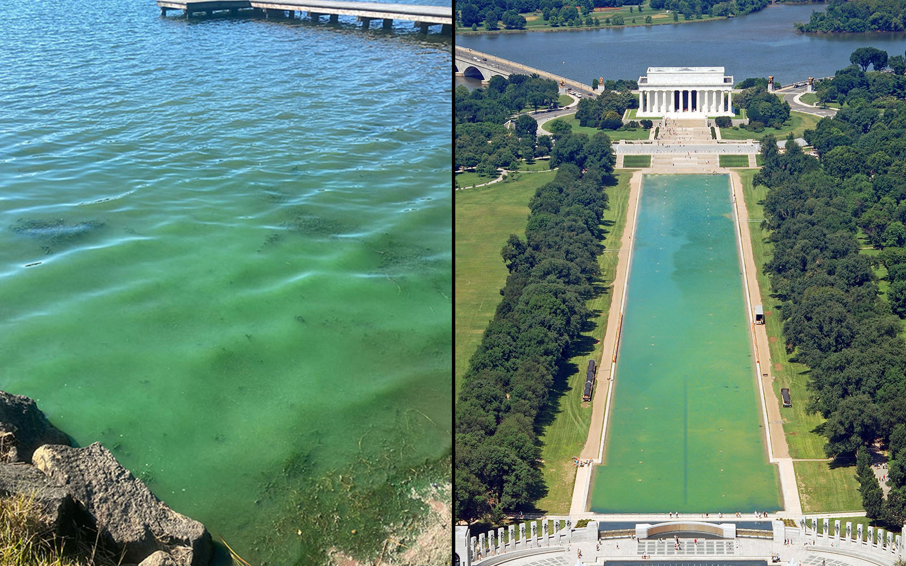

The Receipts
Presented without comment. Allegedly controversial. Definitely green.

Sample It Yourself
Eyedropper Tool
Click the button below, then click anywhere on the photo above — or anywhere on your screen. Your browser will sample the exact pixel color. We trust you to aim at the green part, but even if you don't, the rest of the pool is also not red, white, or blue.
⚠ Your browser does not support the EyeDropper API. Try Chrome or Edge.
Color Chip
—
The Official Excuse Bingo Card
A comprehensive catalogue of reasons offered by the media to explain why the thing that looks green is not, in fact, green — or is green but is somehow Biden's fault.
"It's just the lighting"
The lighting in every photograph, drone footage, and the actual sky above Washington D.C., presumably.
Debunked by: Noon"Democrat-controlled EPA stopped cleaning it"
The Lincoln Memorial Reflecting Pool is maintained by the National Park Service. Algae does not read executive orders.
Debunked by: Biology"The Left wants DC to look dirty"
A clandestine multi-decade algae-deployment operation. Thousands of operatives. No leaks. Plausible.
Debunked by: Occam's Razor"It's not really that green"
Counterpoint: look at it.
Debunked by: Eyes"It was worse under Obama"
This is technically a concession that it is, in fact, green. Progress!
Self-own detected"The media is using color-corrected photos"
The media, the tourists, the Park Service, Google Maps satellite view, and your own uncle's vacation photos are all in on it.
Debunked by: Google Maps